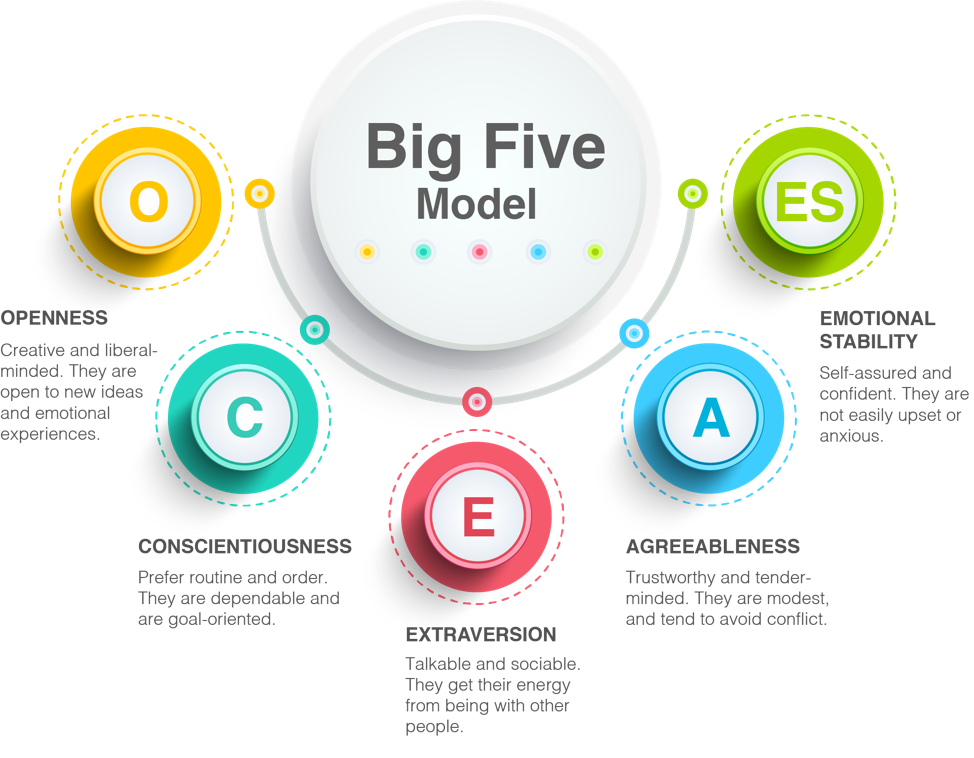

| Personality
The Big Five is the most widely accepted model today for understanding personality.
This model organizes people’s personality into five explicit dimensions commonly referred to as: Openness to Experience (O), Conscientiousness (C), Extraversion (E), Agreeableness (A), and Emotional Stability (ES).

These traits are not a classification or psychopathology, but are rather a description of characteristics that are present to some degree in all people. These traits emerge across cultures around the world and are caused by genetic and environmental factors1.
Your Openness score: Extremely Low (0.1 to 2nd Percentile)
Those high on Openness have an appreciation for aesthetics and the arts. They tend to be liberal, have active imaginations, and are inner-directed. The opposite of Openness is closed-mindedness.
Your Conscientiousness score: Extremely Low (0.1 to 2nd Percentile)
Those high on Conscientiousness are self-disciplined, strive for achievement, and prefer order. They like to have things planned in advance rather than to do things spontaneously.
Your Extraversion score: Very Low (3 to 8th Percentile)
Those high on Extraversion are talkative, sociable, and assertive. The opposite end of Extraversion is Introversion. Whereas Extraverts get energy from being with other people, Introverts get energy from being alone.
Your Agreeableness score: High (76 to 91st Percentile)
Those high on Agreeableness get along with others. They are be modest, cooperative, and tender minded. However, because of their avoidance of conflict they can find leadership positions challenging and difficult.
Your Emotional Stability score: Average (25 to 75th Percentile)
Those high on Emotional Stability are self-assured, confident, and do not have difficulty with self-esteem. The opposite pole of Emotional Stability is Neuroticism. Those high on Neuroticism tend to be easily upset, angry, and anxious.